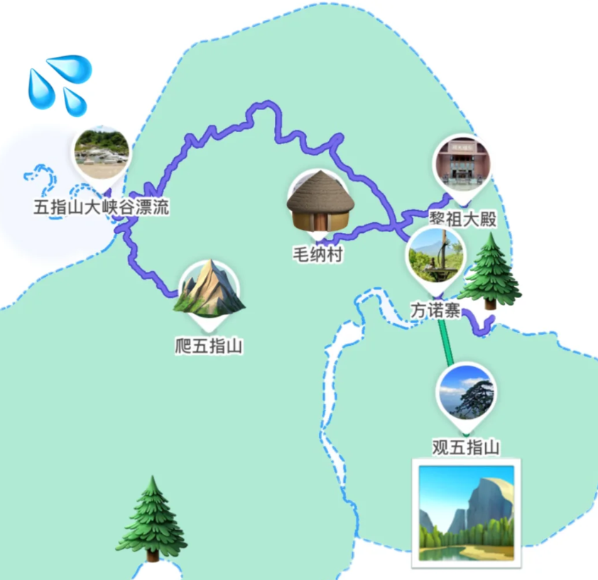
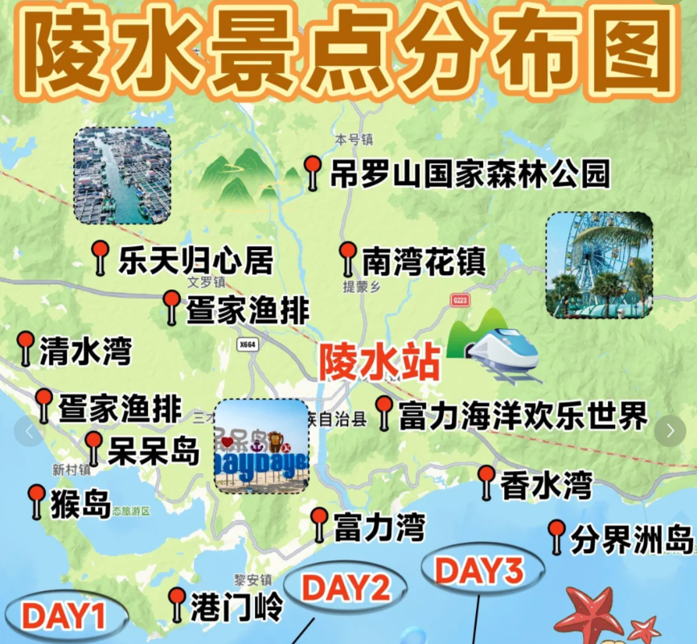
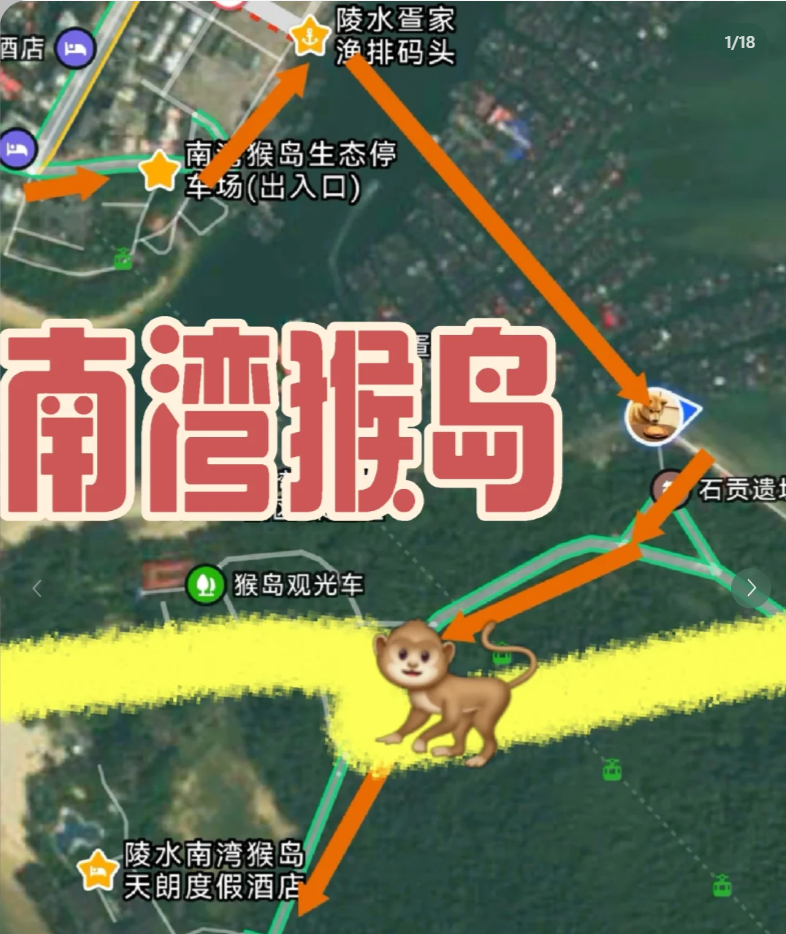
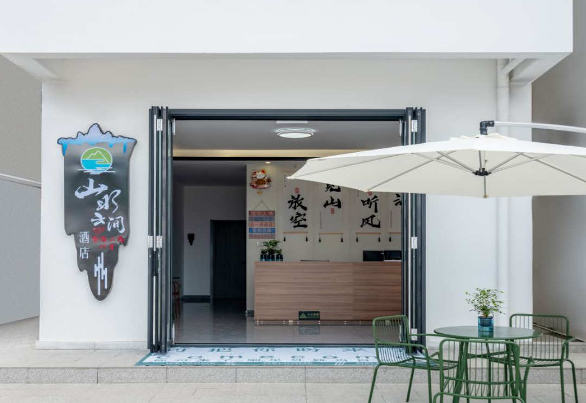

海南中南部自驾5日陪伴游（五指山-陵水-三亚）¶
🗺 行程总览¶
本攻略强调舒适节奏、生态体验与文化陪伴。全程自驾，覆盖五指山热带雨林、陵水黎苗风情、三亚礼佛观海经典线路，是一次融合自然、文化与亲情之旅。
✅ 出行概况¶
- 出行时间：2025年6月21日 ～ 6月25日（5天5晚）
- 人数结构：4人（其中2位长辈）
- 交通方式：全程自驾（适合灵活规划与接驳）
- 住宿安排：根据行程分区域入住（五指山 → 陵水 → 三亚）
- 旅游关键词：🌿 雨林生态｜🙏 礼佛静心｜🚗 自由自驾｜👵 关爱长辈
🗓 行程速览表¶
| 日期 | 区域 | 核心活动 | 住宿建议 |
|---|---|---|---|
| 6月20日（周五） | 五指山 | 晚上抵达，入住家中，简单休整 | 居家 |
| 6月21日（周六） | 五指山 | 五指山热带雨林观光区 + 毛道村（总书记视察地）文化体验 | 居家 |
| 6月22日（周日） | 陵水 | 自驾前往南湾猴岛 + 索道跨海观景 + 猴群互动 + 入住南湾海边酒店 | 上水云间度假酒店（南湾） |
| 6月23日（周一） | 陵水→三亚 | 椰田古寨民俗文化 + 下午亚特兰蒂斯水族馆参观 + 晚上观看千古情实景演出 | 海棠湾海之洲国际度假公寓（已预订） |
| 6月24日（周二） | 三亚 | 亚龙湾森林公园登高观景一日游 + 回酒店自由休息（泳池/散步等） | 海棠湾海之洲国际度假公寓（已预订） |
| 6月25日（周三） | 三亚 | 南山文化礼佛祈福 + 天涯海角海景打卡 + 三亚国际免税城购物 + 晚上登机返程（20:00起飞） | 无（当日返程） |
💡 温馨提醒¶
- 所有景区均考虑到老人步行能力：优先选择平坦步道、设有电瓶车的景点；
- 每日行程不超过2-3个核心活动，确保宽松不疲劳；
- 推荐午休或傍晚活动，避开中午酷热；
- 每处推荐都提供百度/高德导航链接，可手机一键导航，便于实地使用。
Day 1｜6月21日｜五指山热带雨林观光区 + 毛道村慢生活¶
📍 区域：五指山市区及南圣镇
🏡 住宿：居家
🚗 活动半径：自驾 30～40 分钟以内（山路为主，注意缓慢驾驶）

🌳 上午｜五指山热带雨林观光区（生态体验 + 轻徒步）¶
- 建议出发时间：上午 8:30
- 距市区约 20 分钟车程，景区设有电瓶车与步行栈道
- 推荐游览路线：
- 游客服务中心 → 生态栈道 → 兰花谷 → 雨林观景平台
- 看点特色：
- 典型热带雨林植被：野芭蕉、藤本植物、榕树
- 多样化鸟类声音与溪水相伴
- 全程大部分为木栈道，设有树荫和凉亭，适合长辈慢步观景
导航链接：
📍高德导航：五指山热带雨林风景区


- 没想到海南首个超出预期的景点是五指山热带雨林国家公园，诀窍在于跟随图二的路线，左上右下，因为左侧是沿江景观爬起来有乐趣， 右侧基本是单纯下山的路了，70几岁的老人都能乐呵呵地爬到昌化江之源再下来。景点看似简陋但非常原生态，静态照片感受不出来，一定得自己身在其中走一圈才能有热带雨林亲密接触的感受。可惜没看到太多野生动物，而且枯水期水流较小少了些乐趣
🍽 中午｜市区简餐 + 午休¶
- 推荐餐厅：
- 【雨林人家】或【山兰印象】黎族风味馆
- 推荐菜品：
- 山兰米饭、香煎小河鱼、椰香焖鸡、苦瓜炒腊肉
- 建议回居所休息至下午 15:00，避开正午高温时段
🏘 下午｜毛道村（含毛耐自然村）文化探访 + 乡村漫步¶
毛道村位于五指山南圣镇，是一个以黎族为主的少数民族村落，是“绿水青山就是金山银山”理念在海南的生动实践地。
2013年，**习近平总书记曾亲临毛耐村**视察，强调生态保护与脱贫攻坚相结合。
- 建议出发时间：下午 15:30
- 自驾路线：约 40 分钟山路，建议缓行，沿途风景秀丽
- 推荐体验：
- 村史馆与总书记视察展陈（毛耐村入口）
- 民居拍照（竹楼、瓦房、黎锦装饰）
- 乡村小径步行，体验少数民族田园生活节奏
- 若时间允许，可参与村民讲解或购买本地土特产（如山兰米、小米蕉、竹编工艺）

导航链接：
📍高德导航：五指山毛道村
🍲 晚餐建议¶
- 回家用餐为佳，或就近农庄餐厅：
- 【南圣庄园农家乐】：口味朴实，食材新鲜
- 推荐尝试：黎族灶台焖饭、苦丁茶煲鸡、野菜汤
📝 小结¶
| 项目 | 建议时间 | 适合人群 | 活动强度 |
|---|---|---|---|
| 热带雨林观光区 | 上午 8:30~11:30 | 全体 | ⭐⭐ |
| 毛道村探访 | 下午 15:30~17:30 | 长辈+年轻人 | ⭐ |
| 回家晚餐+休息 | 晚上 18:30~ | 全体 | ⭐ |
📌 小贴士：
- 毛道村与毛耐自然村地形较平缓，但部分道路为水泥乡道，请小心驾驶；
- 可自带茶水、扇子、防晒物品；
- 毛耐村展厅一般无需门票，开放时间为白天 9:00～17:00；
- 村口停车场车位有限，可提前联系村支书或游客中心了解接待情况。
Day 2｜6月22日｜南湾猴岛生态之旅 + 临海休憩¶
📍 区域：陵水县南湾半岛
🏨 住宿：陵水南湾猴岛·上水云间度假酒店
🚗 路线调整：上午五指山出发 → 下午游览猴岛 → 入住酒店，方便第二天继续前往椰田古寨

🚗 上午：五指山出发 → 前往南湾猴岛¶
- 建议出发时间：上午 9:00
- 自驾路线：约 1 小时 40 分钟，五指山 → 陵水县南湾猴岛景区停车场（导航建议：南湾猴岛索道站）
- 沿途可短暂停靠陵水县镇简餐或购买水果
🐒 下午：南湾猴岛生态旅游区（热带海岛 + 猴群互动）¶
南湾猴岛是世界唯一的热带海岛型猕猴自然保护区，景区建在南湾半岛上，需搭乘索道入岛，体验感极强，适合老人和孩子共同游览。
- 建议游览时间：13:30～16:30
- 核心看点：
- 🛗【乘坐跨海索道】：长达2.1公里，俯瞰港湾与渔村风光（可选单程或往返）
- 🐒【猴群生态互动区】：观看猴子攀爬跳跃，定时表演
- 🌴【海滩漫步区】：遮荫好，可坐在长椅观景
- 🛶【南湾渔排风情】：若体力允许，可体验渔排漫步、水上木桥
- 长辈友好程度：
- 有电瓶车接驳站、平整观景道
- 建议避免刺激喂食动作（猴子会主动靠近）
- 推荐票种：
- 成人票（含往返索道）：约 95 元
- 老人票（凭证件享受半价），建议现场租导览耳机讲解

- 按照图片指引 先是自驾定位到南湾猴岛生态停车场 停车3小时以内3元 车位比较充足
- 从停车场出来 往前走 会看见一个圆贝壳形状的建筑 P2 右边有一个像公交车站一样的棚子 P3 就是疍家渔船码头了 棚子前有售票处 公交船票已涨价为16元往返每人 P4 最晚返程班次是21点 这也是本次行程了全部花销了
- 🚤检完票就上船 船很小 大概能坐10个人 不一会就开船了 路程也很近 就是到地图上石贡遗址那里 没两分钟就到了 这里沿途也就穿过了疍家渔船 P5 非常有特色 公交船还会在鱼排间停靠接送本地的居民上下岸
- 🏝上岛之后有两条路线 直走上去有一个台阶 走过去就是去看猴的路。 左手边有一条栈道 栈道外就是赶海的区域了
- 📝划重点 这里就要看你登岛的时间来安排行程了 一定要查潮汐表
导航链接：
📍南湾猴岛生态停车场）
🏨 傍晚：入住上水云间度假酒店（靠海休闲）¶
- 地理位置：距离猴岛景区出口仅5~10分钟车程
- 酒店特色：
- 靠近港湾码头、可眺望渔排与落日
- 安静舒适，带有休息平台与室外茶座
- 餐厅有本地渔家风味小炒，适合不想再外出的长辈
- 建议安排：
- 17:00 入住，休整放松
- 傍晚在酒店海堤边散步观落日
- 晚餐可在酒店或前往南湾镇上小馆

导航链接：
📍高德导航：上水云间度假酒店
📝 小结¶
| 项目 | 时间 | 活动强度 | 推荐人群 |
|---|---|---|---|
| 五指山出发 → 猴岛 | 上午 9:00～12:00 | ⭐ | 全体 |
| 南湾猴岛生态游览 | 下午 13:30～16:30 | ⭐⭐ | 老少皆宜 |
| 入住上水云间酒店休息 | 下午 17:00～ | ⭐ | 长辈友好 |
📌 温馨提醒：
- 猴岛景区建议**提前线上购票**（索道高峰期可能排队）
- 夏季需备足水、防晒、防蚊液，注意保护老人情绪不被猴子吓到
- 可携带小面包/香蕉，但建议**不主动喂猴**
- 回酒店途中注意导航，部分道路为码头区域，请慢行
Day 3｜6月23日｜椰田古寨民俗体验 + 亚特水族馆 + 千古情夜秀¶
📍 区域：陵水县 → 三亚海棠湾
🏨 住宿：三亚海棠湾海之洲国际度假公寓（已预订）
🚗 自驾路线：上水云间酒店 → 椰田古寨 → 海棠湾公寓 → 亚特兰蒂斯 → 千古情剧场
🚘 出发建议¶
- 建议出发时间：上午 8:30 从【上水云间酒店】出发
- 到椰田古寨仅需约 30 分钟自驾，路线平稳
🎎 上午：椰田古寨民俗文化区（主打黎苗体验）¶
椰田古寨是国家 AAAA 级景区，以黎族、苗族原生态文化为核心，融合建筑、服饰、歌舞与传统工艺，是海南民族文化最集中的展示区之一。
- 游览时间：约 9:30～11:30
- 看点推荐：
- 原始竹楼 + 黎族婚礼再现
- 黎锦现场织布 + 苗银打铁展示
- 实景演出《槟榔谷的传说》：10:30 或 11:30 演出
导航链接：
📍高德导航：陵水椰田古寨
🍽 中午：简餐 + 驱车前往三亚海棠湾酒店¶
- 建议 12:00 左右用餐，可在陵水或沿途找简便午饭
- 餐厅推荐：陵水老街清补凉、椰林小馆、简食快炒
- 椰田古寨 → 三亚海棠湾，自驾约 50 分钟
- 建议 13:30 左右入住【海棠湾海之洲国际度假公寓】
🐠 下午：三亚·亚特兰蒂斯水族馆（失落的空间）¶
亚特兰蒂斯的水族馆是中国规模最大的水下生态观赏空间之一，馆内空调舒适，适合长辈避暑观赏。漫步其中如进入“海底古文明”。
- 建议游览时间：14:30～16:30（步行节奏轻松）
- 看点推荐：
- 巨型观景玻璃海缸（鲨鱼、魔鬼鱼、海龟等）
- 水下隧道 + 海神壁画拍照
- 适合家庭合影，长辈体验新奇水域生物
导航链接：
📍高德导航：三亚亚特兰蒂斯·失落的空间水族馆
🍽 晚餐建议（17:00～18:00）¶
- 可选择亚特兰蒂斯内餐厅（如南洋风味、面馆）或回海棠湾附近小吃街
- 推荐提前预约演出门票时间，确保进场顺利
🎭 晚上：观看《三亚千古情》大型实景演出¶
- 建议场次：第二场 20:00～21:00（建议 19:30 前入场）
- 自驾从亚特兰蒂斯或酒店出发：约 30 分钟车程
- 表演亮点：
- 大型情境剧融合黎族文化、爱情史诗、海上丝路故事
- 音响、灯光震撼，适合全龄观看
- 如时间不足，可临时调整千古情演出至 Day 4 傍晚观看（Day 4 下午为自由休闲时间）
导航链接：
📍高德导航：三亚千古情景区
🛌 演出结束后：返回酒店休息（21:15～21:45）¶
- 可直接返回海棠湾酒店（车程约 30～40 分钟）
- 为第二天安排森林公园做好充分休息准备
📝 小结¶
| 项目 | 建议时间 | 适合人群 | 活动强度 |
|---|---|---|---|
| 椰田古寨民俗村 | 上午 9:30~11:30 | 全体 | ⭐⭐ |
| 亚特兰蒂斯水族馆参观 | 下午 14:30~16:30 | 全体 | ⭐ |
| 千古情实景演出 | 晚上 20:00~21:00 | 全体 | ⭐ |
| 海棠湾酒店入住 + 休息 | 下午~夜间 | 全体 | ⭐ |
📌 小贴士：
- 椰田古寨和千古情演出票建议提前通过“飞猪”或官方小程序购买；
- 亚特水族馆门票建议选普通票（如不进潜水区），1.2m 以下儿童免费；
- 千古情夜场演出建议选靠中后区中间排，视野佳，便于进出；
- 全日行程重视体验与观赏，体力压力小，适合长辈放松欣赏。
Day 4｜6月24日｜亚龙湾森林公园一日轻徒步 + 酒店休闲放松¶
📍 区域：三亚·亚龙湾
🏨 住宿：三亚海棠湾海之洲国际度假公寓（继续入住）
🚗 自驾路线：海棠湾 → 亚龙湾森林公园 → 返回海棠湾酒店（往返约 50 分钟）
🌲 上午：亚龙湾热带天堂森林公园｜登高观海，避暑漫步¶
亚龙湾森林公园是一处集自然生态、山海景观与步道体验为一体的景区，绿荫浓密、空气湿润，非常适合家庭轻松出行，尤其适合带长辈慢游。
- 出发时间：上午 8:00（海棠湾出发，车程约 25 分钟）
- 建议游览时间：08:30～11:30
- 推荐路线：
- 电瓶车乘坐 → 情人谷 → 栈道步行登顶观景台 → 热带雨林体验区
- 特色看点：
- 山顶观海平台俯瞰亚龙湾、南中国海
- 情人谷吊桥 + 雨林步道 + 长椅休息区
- 多处有遮阳亭、凉风点，适合长辈走走停停
导航链接：
📍高德导航：亚龙湾森林公园
🍽 中午：园区简餐或回程午餐（12:00～13:00）¶
- 若体力充足：可在园区餐厅小憩并就餐
- 若已游览结束：可选择回酒店沿途餐厅
- 推荐餐厅：润丰农庄、亚龙湾百年古厨（车程约15分钟）
🧘♀️ 下午：回酒店休息 + 自由活动¶
- 13:30～16:00 返回海棠湾酒店，长辈可午休、泡茶聊天
- 若精力尚可，推荐以下选项：
🎐 酒店附近活动推荐：¶
- ✅ 泳池泡脚/轻游：带遮阳休息区
- ✅ 海边步行道散步：距酒店约10分钟，适合傍晚漫步
- ✅ 商圈咖啡/甜品休息：如68环球美食广场、海棠湾小超市区
🍽 晚餐建议¶
- 可在酒店周边简餐，避免远行
- 推荐菜品：文昌鸡、椰汁南瓜羹、海南粉、小炒黄牛肉
📝 小结¶
| 项目 | 建议时间 | 适合人群 | 活动强度 |
|---|---|---|---|
| 亚龙湾森林公园 | 上午 08:30～11:30 | 全体 | ⭐⭐ |
| 回酒店午休 + 自由活动 | 下午 13:30～17:30 | 长辈优先 | ⭐ |
| 晚餐 / 散步 | 傍晚～晚上 | 全体 | ⭐ |
📌 小贴士：
- 森林公园建议穿运动鞋、防晒衣，带水壶与纸巾；
- 如长辈不便登山，建议电瓶车直达观景台 + 坐亭子拍照休息；
- 酒店泳池部分需穿戴泳衣泳帽，建议提前准备；
- 全天无强制安排，节奏最为宽松，适合恢复体力与亲子交流。
Day 5｜6月25日｜南山礼佛祈福 + 天涯海角打卡 + 免税购物 + 晚间返程¶
📍 区域：三亚市西南 → 市区 → 机场
✈️ 航班起飞时间：当晚 20:00
🎯 行程目标：上午清凉参观景点 + 下午购物轻松切换 + 准时顺利返程
🌄 上午：海棠湾退房 → 出发前往南山文化旅游区¶
- 建议起床时间：07:30，早餐后收拾行李
- 建议退房时间：08:30（可将行李放车内）
- 海棠湾 → 南山文化旅游区 自驾约 45 分钟
- 出发时间：08:30，避开高温与午间客流
🙏 09:30～11:00｜南山文化旅游区｜礼佛祈福 + 观音合影¶
- 核心看点：
- 南山寺（中国南方佛教重地）
- 108米海上观音圣像
- 吉祥如意园，适合散步乘凉
- 适合长辈静心参拜，设有观光车与多个休息点
- 建议游览时间：约 1.5 小时
导航链接：
📍高德导航：南山文化旅游区
🏖 11:15～12:15｜天涯海角景区｜海滨慢游 + 打卡地标¶
- 从南山出发约 15 分钟车程
- 景区设电瓶车，适合长辈慢行拍照
- 看点：天涯石、海角石、南天一柱、情侣大道
导航链接：
📍高德导航：天涯海角景区
🍽 12:30～13:30｜简餐午饭 + 前往免税城¶
- 推荐路线：天涯海角 → 三亚国际免税城，车程约 35~40 分钟
- 沿路可在三亚湾区域简餐或直接在免税城内用餐
🛍 14:00～16:00｜三亚国际免税城购物（中免集团）¶
- 推荐安排：
- 购买香水护肤、箱包、海南特色纪念品
- 使用“机场提货”服务，避免现场携带
- 商圈内有休息区，适合长辈轮换休息+陪购
导航链接：
📍高德导航：三亚国际免税城
🍜 16:00～17:00｜晚餐（免税城附近或机场）¶
- 可在免税城内或机场美食区享用简餐
- 推荐菜式：海南鸡饭、煲仔饭、小椰子冻
✈️ 17:00～18:30｜前往三亚凤凰国际机场 + 登机¶
- 建议 17:00 从免税城出发，车程约 25 分钟
- 到达后完成安检 + 领取免税商品 + 候机
- 航班起飞时间为 20:00，建议最迟 18:30 抵达机场
📝 小结¶
| 时间段 | 活动内容 | 路程 | 活动强度 |
|---|---|---|---|
| 09:30～11:00 | 南山文化礼佛祈福 | 海棠湾→南山 | ⭐⭐ |
| 11:15～12:15 | 天涯海角地标观景 | 南山→天涯 | ⭐⭐ |
| 14:00～16:00 | 三亚国际免税城购物 | 天涯→市区 | ⭐ |
| 17:00～18:30 | 前往机场 + 登机准备 | 市区→机场 | ⭐ |
| 20:00 | ✈️ 起飞返程，结束旅程 | - | - |
📌 温馨提醒：
- 景区日照较强，建议带帽子、防晒衣、扇子等；
- 所有门票推荐提前通过“飞猪”或小程序预订；
- 若老人疲劳，可适当在免税店轮换休息；
- 建议午餐选靠近天涯海角出口，避免错过购物时间；
- 登机前务必提前领取免税商品（机场中免提货柜台）。
📎 附件参考¶
🗺 全部导航链接清单（备用）¶
| 景点名称 | 高德导航链接 |
|---|---|
| 五指山热带雨林风景区 | 点击导航 |
| 毛道村（毛耐自然村） | 点击导航 |
| 南湾猴岛索道站（游客中心） | 点击导航 |
| 上水云间度假酒店 | 点击导航 |
| 椰田古寨 | 点击导航 |
| 亚特兰蒂斯水族馆 | 点击导航 |
| 三亚千古情景区 | 点击导航 |
| 亚龙湾热带天堂森林公园 | 点击导航 |
| 南山文化旅游区 | 点击导航 |
| 天涯海角景区 | 点击导航 |
| 三亚国际免税城 | 点击导航 |
🎒 本次旅游携带物品建议¶
📄 证件与票据¶
- 身份证（景区打折）
- 航班/酒店确认单（电子）
- 驾照 + 行驶证
🧣 衣物类¶
- 速干衣物 / 防晒衣
- 凉鞋、运动鞋（雨林徒步推荐运动鞋）
- 泳衣泳帽（如使用酒店泳池）
- 遮阳帽、墨镜
📱 电子产品¶
- 手机 + 充电器 + 移动电源
- 相机 / 自拍杆
💧 生活用品¶
- 保温杯、纸巾、湿巾
- 便携伞、防晒霜、驱蚊液
- 小背包（景区使用）
🧰 长辈健康应急包建议¶
| 类别 | 建议物品 |
|---|---|
| 防晒防暑 | 遮阳帽、防晒衣、防晒霜、风油精 |
| 消化系统 | 肠胃药（如藿香正气丸、胃复安）、口服补液盐 |
| 止痛贴敷 | 颈肩贴、腰腿膏药、云南白药喷雾 |
| 常用药物 | 高血压药、心脏药、糖尿病药（按医嘱携带） |
| 意外应急 | 创可贴、碘伏、止血贴、医用酒精棉片 |
| 乘车晕车 | 晕车贴 / 晕车药（乘索道或山路时使用） |
📞 海南旅游服务热线：0898-12301
📞 三亚凤凰机场问讯电话：0898-88289389
📞 急救电话：120｜报警电话：110｜交通事故：122